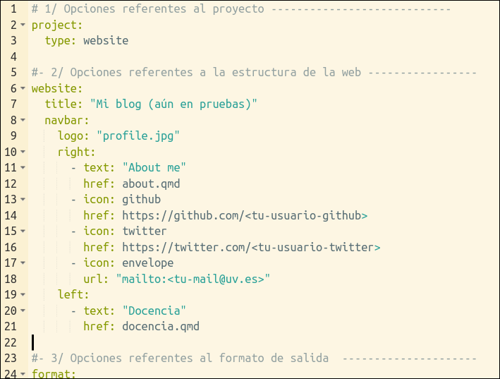
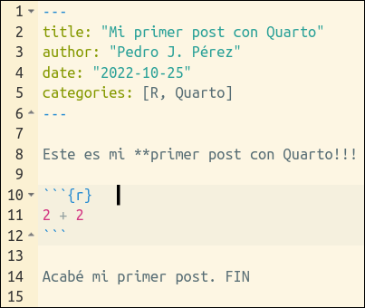

Escribiendo posts: practicando con Quarto
(5ª parte del taller Mi primer blog con Quarto)
![]()
Voy a suponer que los asistentes al taller, y posibles lectores de estos tutoriales, conocen Rmarkdown y han escrito algún documento .Rmd. En ese caso, el paso de .Rmd a .qmd es sencillo.
En cualquier caso, aquí tienes unas FAQ’s para usuarios de .Rmd que se preguntan si pasarse a Quarto, y aquí unas slides sobre las diferencias entre .qmd y .Rmd.
Aquellos que no sepan qué es Rmarkdown pueden empezar por aquí o aquí.
En el tutorial anterior aprendimos a generar nuevos post para nuestro blog. Ahora aprenderemos a escribir esos post: veremos las posibilidades que nos ofrece Quarto a la hora de escribir y formatear nuestros posts.
1 Escribiendo con Quarto
En el tutorial anterior creamos un nuevo post en la carpeta ./posts/my-primer-post/. En realidad ese post es idéntico al primero (welcome) ya que sencillamente hicimos un copy-paste. Ahora sí que vamos a modificar el contenido (yaml/texto/chunks) del post para aprender algunos truquillos sobre Quarto.
Ya sabemos que la carpeta ./posts/my-primer-post/ contiene dos archivos. El importante es index.qmd que es el archivo que genera el post. Veámoslo:

Los ficheros .qmd tienen 3 partes: YAML, texto y chunks de código. Vamos a verlas una a una.
2 YAML
El encabezamiento o YAML, se utiliza para fijar determinadas opciones y metadatos de nuestro documento1.
Una idea importante a recordar es que estamos trabajando con un Qproject. Trabajar con un Qproject tiene ventajas2, entre ellas:
poder procesar todos los archivos con un solo comando:
quarto render <myproject>la posibilidad de “freeze rendered output”
la posibilidad de redireccionar los documentos de salida (output) a otro directorio
posibilidad de compartir la configuración del YAML para múltiples documentos. Los metadatos compartidos se pueden definir tanto a nivel de proyecto como a nivel de directorio.
Esta última ventaja, la posibilidad de compartir opciones de metadatos YAML en varios documentos, es importante ahora, porque nos da diferentes posibilidades para especificar el YAML de nuestros documentos o posts.
2.1 El yaml de un post
En un post se pueden especificar opciones YAML de 3 formas/niveles:
Nivel proyecto: todos los Qprojects contienen un archivo de configuración llamado
_quarto.yml, de forma que, todo documento que se procese (render) dentro del proyecto, heredará automáticamente los metadatos definidos en_quarto.yml.Nivel carpeta: si en una carpeta existe un documento
_metadata.yml, los documentos de esa carpeta tendrán automáticamente las opciones definidas allí. La carpeta/posts/de un blog suele tener un archivo_metadata.yml.Nivel documento: En el yaml del propio post o documento
.qmd
De esta forma, potencialmente, un post puede recibir opciones de YAML desde los 3 niveles. Si hay conflictos prevalecen las opciones del nivel documento, luego nivel carpeta y finalmente nivel proyecto.
Los blogs se publican en formato html, de forma que, aquí y aquí tienes la documentación oficial de Quarto con las principales opciones que se pueden fijar con el YAML para documentos html.
Es imposible repasar todas las opciones de YAML en el taller, veremos solamente algunas. Para ello, creo que la forma más operativa consistirá en mostrar ejemplos de ficheros .yml y revisar su contenido. Por ejemplo veamos las opciones YAML que tiene ahora nuestro blog:
Opciones YAML de nuestro blog
Abajo el contenido del fichero _quarto.yml tal y como lo tenemos ahora en nuestro blog. Solo he añadido 3 comentarios para diferenciar entre secciones:

Abajo el, contenido del fichero ./posts/_metadata.yml. Afectará a todos los ficheros .qmd que haya en la carpeta ./posts/


2.2 Yaml nivel proyecto
En el fichero _quarto.yml se especifican opciones y metadatos que afectaran a todos los documentos del proyecto. En el caso que nos ocupa (un Qproject para crear una web/blog) allí se suelen especificar metadatos acerca de 3 aspectos:
- Funcionamiento del Qproject
- Estructura de la web
- Formato de salida de los documentos
2.2.1 Funcionamiento del Qproject
Estas opciones acerca del funcionamiento del Qproject, se especifican en el fichero _quarto.yml (nivel proyecto).
Como vemos, podemos cambiar:
la carpeta donde se generará el output del proyecto (linea 4: output_dir : docs).
el directorio en el que se procesan los
.qmd(linea 5: execute-dir: project). Los ficheros.qmdse procesan habitualmente en el directorio en el que residen pero puedes cambiarlo al directorio principal del proyecto3. Aquí documentación oficial sobre distintos aspectos de los Qprojects y sus opciones de configuración
2.2.2 Estructura de la web
Ya vimos algunas opciones en el 2º tutorial, veremos algunas más, pero será en el 7º tutorial. Como ejemplo, podríamos modificar esa sección de _quarto.yml para dejarla como:
#- 2/ Opciones referentes a la estructura de la web -----------------
website:
title: "Mi blog (aún en pruebas)"
favicon: profile.jpg
#site-url: https://....
#repo-url: https://....
open-graph: true #-https://quarto.org/docs/websites/website-tools.html#twitter-cards
twitter-card:
creator: "@tu-usuario-twitter"
card-style: summary_large_image
navbar:
logo: "profile.jpg"
#background: primary #- pink
right:
- text: "About me"
href: about.qmd
- icon: github
href: https://github.com/<tu-usuario-github>
- icon: twitter
href: https://twitter.com/<tu-usuario-twitter>
- icon: envelope
url: "mailto:<tu-mail@uv.es>"
left:
- icon: house-door
href: index.html
- text: "Docencia"
href: docencia.qmd
page-footer:
left: "© 2022 Pedro J. Pérez"
center: "Hecho con [Quarto](https://quarto.org)"
right:
- icon: github
href: https://github.com/<tu-usuario-github>
- icon: twitter
href: https://twitter.com/<tu-usuario-twitter>
- icon: envelope
url: "mailto:<tu-mail>@uv.es"Como ves, se añadirían elementos como:
Un pie de página (lineas 28 a 37)4
Hemos añadido un elemento a la
navbarconcretamente el iconoHome(lineas 24 y 25). La documentación oficial para elementos de navegación está aquíElementos de redes sociales como un favicon (linea 4), el url de la web y del repo en Github (lineas 5 y 6) y más elementos de redes sociales (lineas 7 a 10). La documentación oficial para estos elementos está aquí
2.2.3 Formato de salida de los documentos
En un blog/web el formato de salida es siempre .html; sin embargo podemos especificar otras opciones como por ejemplo sí los documentos (o páginas de la web, o post del blog) tienen un índice flotante, etc…, etc ….
Tarea 5.1
Bien, una vez hemos repasado las principales opciones referentes a _quarto.yml, vamos a incorporar esas modificaciones a nuestro blog.
2.3 Yaml nivel carpeta
Como ya sabemos, si en una carpeta hay un fichero _metadata.yml, todos los documentos .qmd que se procesen en esa carpeta se verán afectados por esas opciones. Veamos como tenemos ahora mismo ese archivo.
Abajo el, contenido del fichero ./posts/_metadata.yml de nuestro blog

Tarea 5.2
Vamos a cambiar un poco el archivo ./posts/_metadata.yml, simplemente cambiaremos el valor de freeze: true a freeze: auto lo que hará que cuando hagamos un render global del proyecto, solo se vuelvan a ejecutar los archivos que hayan visto cambiado su contenido, el resto no se volverán a procesar.
2.4 Yaml nivel documento
Como dijimos, también podemos especificar metadatos y opciones para un documento .qmd en el encabezamiento del documento. Lógicamente esas opciones sólo afectarán a ese documento.
Tarea 5.3
Probemos a cambiar el yaml o encabezamiento de ./posts/my-primer-post/index.qmd
3 Texto
El texto (o narrativa) de un documento .qmd se escribe, al igual que en los documentos .Rmd en markdown. Aquí la documentación oficial de Quarto.
No lo vamos a practicar ahora. Lo haremos (un poco) luego cuando hagamos un post de ejemplo.
3.1 Sintaxis básica de markdown
Aquí puedes ver o recordar la sintaxis básica, las principales reglas para escribir en
markdown.Como ejemplo:

4 Chunks de código
Los chunks de código en .qmd también tienen un comportamiento similar a lo que ocurría en los chunks en documentos .Rmd. La documentación oficial está aquí
4.1 Diferencias con .Rmd
Las principales diferencias son:
- En
.Rmdlas opciones de los chunks se podían especificar de forma global en un chunk inicial (generalmente llamado setup) y a nivel individual en cada uno de los chunks; mientras que ahora, con.qmd, las opciones de los chunks se pueden especificar globalmente en el YAML y a nivel individual en cada uno de los chunks.
- En los chunks individuales ahora se se utiliza la sintaxis YAML (
key: value) en lineas dentro del chunk que empiezan con#|. Por ejemplo:

Las principales opciones son: echo, eval, warning, error, output e include. Aquí la documentación oficial.
echo, además los típicos true y false, ahora incorpora un nuevo valorfencedque facilita mostrar las marcas de los chunks en el documento final. Documentación aquí. Los llamados unexecuted Blocks, documentación aquí, también facilitan mostrar las marcas de los chunks en el documento de salida.Además, si usamos
knitrpara ejecutar los chunks, entonces podemos usar todas las opciones nativas deknitr, como: collapse, fig.width, comment, etc … Más información aquí. Un ejemplo:

4.2 Más opciones para los chunks
La documentación oficial la tienes aquí.
- Puedes hacer
folding code
Muéstrame el código
```{r, eval = FALSE}
#| code-fold: true #- {true, false, show}
#| code-summary: "Muéstrame el código"
2 + 2
```- Si el código es muy largo, puedes usar
code-overflow: wrapycode-overflow: scroll
```{r, eval = FALSE}
#| code-overflow: wrap
2 + 2 +2 + 2 + 2 + 2 +2 + 2 + 2 + 2 + 2 + 2 + 2 + 2 + 2 + 2 + 2 + 2 + 2 + 2 + 2 + 2 +2 + 2
```- Puedes hacer que se muestre el número de linea
5 Elementos para escribir
5.1 Elementos básicos
Para escribir en Markdown, además de texto, tenemos los siguientes elementos básicos:
Links (documentación aquí)
Listas (documentación aquí)
Tablas (documentación aquí)
Código (documentación aquí)
Ecuaciones (documentación aquí). Editor de ecuaciones aquí o aquí.
El editor visual facilita la introducción de estos elementos en tus documentos. En esta charla de Mine Çetinkaya-Rundel se aprecia fácilmente la utilidad del editor visual.
5.2 Más elementos para “escribir”
Además de los elementos básicos de escritura que nos ofrece la sintaxis básica de markdown, Quarto nos ofrece más posibilidades. Por ejemplo:
Callout blocks (documentación aquí)
Divs & spans (documentación aquí)
Extensiones (documentación aquí) . Listado de extensiones oficiales aquí
Veamos algunos de estos elementos con un poco de detalle. Después lo recordaremos con una Práctica.
5.3 Veamos algunos
Layouts
Además de yaml, texto y chunk, para escribir con Quarto conviene conocer la estructura o layout de los artículos que se generan con él.
Los “artículos” tienen un body, un margin y un área para las sidebars, que en nuestro caso contiene el TOC5.
Usando divs se puede hacer que alguna sección de nuestra página ocupe un espacio mayor al habitual; es decir, mayor al espacio habitualmente reservado para el body.
Veamos las posibilidades que tenemos de layout con este post
Extensiones
Una de las novedades de Quarto es la posibilidad de usar extensiones. Las extensiones se escriben en lenguaje Lua.
Para ver como instalar y usar extensiones vamos a ir, otra vez, a otro de los post del blog del taller: concretamente aquí
Imágenes
Conocemos la sintaxis básica para insertar imágenes
; ahora veremos posibilidades más avanzadasVeamos como insertar imágenes con este post del blog del taller.
6 Resumen
7 Práctica
En esta sección dedicaremos un tiempo a la práctica libre para la creación y escritura de un post. Para ello te ofrezco más abajo una plantilla con la que elaborar un post. la plantilla tiene una serie de tareas/retos que has de realizar/superar.
Usaremos un ejemplo para practicar la sintaxis y nuevas posibilidades de Quarto a la hora de generar documentos .html: o sea, para escribir posts para nuestro blog.
Las soluciones a la Práctica están aquí
Notas
El
YAMLserá procesado varias veces durante el procesado del documento: es leído por Quarto, knitr y Pandoc e influirá en el resultado final, pudiendo afectar al código, al contenido y al procesado del documento↩︎Puedes ver la documentación oficial de Quarto sobre proyectos aquí↩︎
Aunque yo no lo haría: estoy muy acostumbrado a que el directorio de trabajo de los
.Rmdsea la carpeta donde residen↩︎Puedes ver un ejemplo de cómo quedaría el pie de página en la web del taller, aquí↩︎
Además, el layout puede venir afectado por la opción
page-layout: custom #- {article, full, custom}↩︎